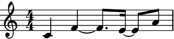
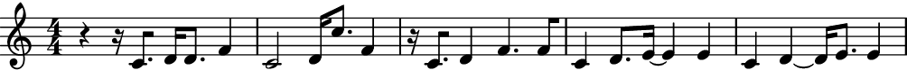
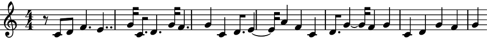
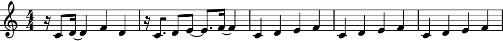
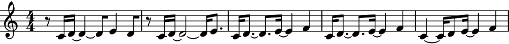
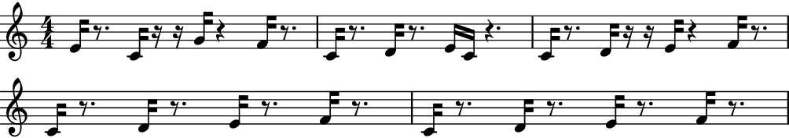

GeneticAlgorithmMusicMaker
- class auxjad.GeneticAlgorithmMusicMaker(*, pitch_target: list, pitch_genes: list, attack_point_target: list, attack_point_genes: list, duration_unit: Duration = Duration(1, 16), units_per_window: int = 16, pitch_initial_individual: list | None = None, attack_point_initial_individual: list | None = None, population_size: int = 100, select_n_parents: int = 10, keep_n_parents: int = 0, mutation_chance: float = 0.2, mutation_index: float = 0.1, evaluation_index: float = 0.2, omit_time_signature: bool = False, time_signatures: list | None = None, attack_points_mode: bool = False, pitch_score_bias: float = 0.5)[source]
Uses two
auxjad.GeneticAlgorithm’s, one for pitch and another for attack points, in order to create musical cells. At each call of__call__(), it iterates the genetic algorithms by one generation, and returns anabjad.Selectioncreated with the fittest pitch and attack point individuals.Note
Many of the properties of this class reflect the behaviour of properties of
GeneticAlgorithm. Some have the same name as those inGeneticAlgorithm, including:Properties related to pitch and attach points will also have equivalents:
pitch_targetandattack_point_targetare equivalent toGeneticAlgorithm.targetpitch_genesandattack_point_genesare equivalent toGeneticAlgorithm.genespitch_initial_individualandattack_point_initial_individualare equivalent toGeneticAlgorithm.initial_individualpitch_populationandattack_point_populationare equivalent toGeneticAlgorithm.populationfittest_pitch_individualandfittest_attack_point_individualare equivalent toGeneticAlgorithm.fittest_individual
- Basic usage:
At its basic, this class needs a target and a list of genes for both pitches and attack points. The evaluation function will compare all individuals in the population against this target when scoring them.
>>> maker = auxjad.GeneticAlgorithmMusicMaker( ... pitch_target=["c'", "d'", "e'", "f'"], ... pitch_genes=["c'", "d'", "e'", "f'", "g'", "a'", "b'", "c''"], ... attack_point_target=[0, 4, 8, 12], ... attack_point_genes=list(range(16)), ... ) >>> repr(maker) pitches: ["c'", "d'", "e'", "f'"] attack_points: [0, 4, 8, 12] >>> len(maker) 4 >>> notes = maker.target_music >>> staff = abjad.Staff(notes) >>> abjad.show(staff)

Calling the instance will apply the genetic algorithm process and output an
abjad.Selectionwith the fittest individual in the population.>>> notes = maker() >>> maker.generation_number 0 >>> staff = abjad.Staff(notes) >>> abjad.show(staff)
 Subsequent calls will create new generations of individuals, always outputting the fittest measure.
>>> notes = maker() >>> maker.generation_number 1 >>> staff = abjad.Staff(notes) >>> abjad.show(staff)

output_n():The method
output_n()can be used to outputniterations of the process. They are output as a singleabjad.Selection:>>> maker = auxjad.GeneticAlgorithmMusicMaker( ... pitch_target=["c'", "d'", "e'", "f'"], ... pitch_genes=["c'", "d'", "e'", "f'", "g'", "a'", "b'", "c''"], ... attack_point_target=[0, 4, 8, 12], ... attack_point_genes=list(range(16)), ... ) >>> notes = maker.output_n(5) >>> staff = abjad.Staff(notes) >>> abjad.show(staff)
 pitch_genes:While
attack_point_genesmust always take alistofint’s,pitch_genescan take a variety of object types. The implementation of this class usesabjad.LeafMaker, so pitches can take any objects accepted by that class. These includeintandstrfor pitches,Nonefor rests,tuplefor chords, etc.>>> maker = auxjad.GeneticAlgorithmMusicMaker( ... pitch_target=["c'", None, "e'", ("g'", "bf'")], ... pitch_genes=[None, ... "c'", ... "d'", ... "e'", ... "f'", ... "g'", ... ("g'", "a'"), ... ("g'", "bf'"), ... ("g'", "c''"), ... ], ... attack_point_target=[0, 4, 8, 12], ... attack_point_genes=list(range(16)), ... population_size=50, ... ) >>> notes = maker.output_n(5) >>> staff = abjad.Staff(notes) >>> abjad.show(staff)
Which is equivalent to:
>>> maker = auxjad.GeneticAlgorithmMusicMaker( ... pitch_target=[0, None, 4, (7, 10)], ... pitch_genes=[None, 0, 2, 4, 5, 7, (7, 9), (7, 10), (7, 12)], ... attack_point_target=[0, 4, 8, 12], ... attack_point_genes=list(range(16)), ... population_size=50, ... ) >>> notes = maker.output_n(5) >>> staff = abjad.Staff(notes) >>> abjad.show(staff)

units_per_windowandduration_unit:By default, there are
16attack points in a window, each lasting forabjad.Duration((1, 16)). These can be changed usingunits_per_windowandduration_unit:>>> maker = auxjad.GeneticAlgorithmMusicMaker( ... pitch_target=["c'", "d'", "e'", "f'"], ... pitch_genes=["c'", "d'", "e'", "f'", "g'", "a'", "b'", "c''"], ... attack_point_target=[0, 8, 16, 24], ... attack_point_genes=list(range(32)), ... duration_unit=abjad.Duration((1, 32)), ... units_per_window=32, ... ) >>> notes = maker.output_n(5) >>> staff = abjad.Staff(notes) >>> abjad.show(staff)
total_duration:The property
total_durationcan be used to check the total duration of the window size (that is,duration_unittimesunits_per_window).>>> maker = auxjad.GeneticAlgorithmMusicMaker( ... pitch_target=["c'", "d'", "e'", "f'"], ... pitch_genes=["c'", "d'", "e'", "f'", "g'", "a'", "b'", "c''"], ... attack_point_target=[0, 4, 8, 12], ... attack_point_genes=list(range(16)), ... duration_unit=abjad.Duration((1, 32)), ... units_per_window=16, ... ) >>> maker.total_duration 1/2
omit_time_signature:By default, a time signature is added to the output automatically:
>>> maker = auxjad.GeneticAlgorithmMusicMaker( ... pitch_target=["c'", "d'", "e'", "f'", "g'"], ... pitch_genes=["c'", "d'", "e'", "f'", "g'", "a'", "b'", "c''"], ... attack_point_target=[0, 4, 8, 12, 16], ... attack_point_genes=list(range(20)), ... units_per_window=20, ... ) >>> notes = maker.output_n(5) >>> staff = abjad.Staff(notes) >>> abjad.show(staff)
Setting
omit_time_signaturetoTruewill result in no time signature. Note that the output might need to be cleaned up usingabjad.Meter.rewrite_meter().>>> maker = auxjad.GeneticAlgorithmMusicMaker( ... pitch_target=["c'", "d'", "e'", "f'", "g'"], ... pitch_genes=["c'", "d'", "e'", "f'", "g'", "a'", "b'", "c''"], ... attack_point_target=[0, 4, 8, 12, 16], ... attack_point_genes=list(range(20)), ... units_per_window=20, ... omit_time_signature=True, ... ) >>> notes = maker.output_n(5) >>> staff = abjad.Staff(notes) >>> abjad.show(staff)
 time_signatures:Time signatures can also be enforced in the output. Set
time_signaturesto a singleabjad.TimeSignatureor alistofabjad.TimeSignature’s as needed.A single
abjad.TimeSignatureis applied to all measures:>>> maker = auxjad.GeneticAlgorithmMusicMaker( ... pitch_target=["c'", "d'", "e'", "f'"], ... pitch_genes=["c'", "d'", "e'", "f'", "g'", "a'", "b'", "c''"], ... attack_point_target=[0, 4, 8, 12], ... attack_point_genes=list(range(16)), ... duration_unit=abjad.Duration((1, 32)), ... time_signatures=abjad.TimeSignature((2, 2)) ... ) >>> notes = maker.output_n(5) >>> staff = abjad.Staff(notes) >>> abjad.show(staff)
A
listofabjad.TimeSignature’s is applied cyclically.>>> maker = auxjad.GeneticAlgorithmMusicMaker( ... pitch_target=["c'", "d'", "e'", "f'", "g'"], ... pitch_genes=["c'", "d'", "e'", "f'", "g'", "a'", "b'", "c''"], ... attack_point_target=[0, 4, 8, 12, 16], ... attack_point_genes=list(range(20)), ... duration_unit=abjad.Duration((1, 16)), ... units_per_window=20, ... time_signatures=[abjad.TimeSignature((2, 4)), ... abjad.TimeSignature((3, 4)), ... ], ... ) >>> notes = maker.output_n(5) >>> staff = abjad.Staff(notes) >>> abjad.show(staff)
pitch_score_bias:Pitches and attack points are scored separately and, by default, contribute equally to the total score of each individual. To change the bias of the pitch score, set
pitch_score_biasto a value between0.0and1.0.This is the default output:
>>> maker = auxjad.GeneticAlgorithmMusicMaker( ... pitch_target=["c'", "d'", "e'", "f'"], ... pitch_genes=["c'", "d'", "e'", "f'", "g'", "a'", "b'", "c''"], ... attack_point_target=[0, 4, 8, 12], ... attack_point_genes=list(range(16)), ... ) >>> notes = maker.output_n(5) >>> staff = abjad.Staff(notes) >>> abjad.show(staff)
 With a high
pitch_score_bias, pitch convergence will tend to be faster at the expense of attack points:>>> maker = auxjad.GeneticAlgorithmMusicMaker( ... pitch_target=["c'", "d'", "e'", "f'"], ... pitch_genes=["c'", "d'", "e'", "f'", "g'", "a'", "b'", "c''"], ... attack_point_target=[0, 4, 8, 12], ... attack_point_genes=list(range(16)), ... pitch_score_weight=0.95, ... ) >>> notes = maker.output_n(5) >>> staff = abjad.Staff(notes) >>> abjad.show(staff)
 In contrast, a low
pitch_score_bias, attack point convergence will tend to be faster at the expense of pitches:>>> maker = auxjad.GeneticAlgorithmMusicMaker( ... pitch_target=["c'", "d'", "e'", "f'"], ... pitch_genes=["c'", "d'", "e'", "f'", "g'", "a'", "b'", "c''"], ... attack_point_target=[0, 4, 8, 12], ... attack_point_genes=list(range(16)), ... pitch_score_weight=0.05, ... ) >>> notes = maker.output_n(5) >>> staff = abjad.Staff(notes) >>> abjad.show(staff)
attack_points_mode:When using this class in attack points mode, each note will last a single unit instead of being extended until the next attack point:
>>> maker = auxjad.GeneticAlgorithmMusicMaker( ... pitch_target=["c'", "d'", "e'", "f'"], ... pitch_genes=["c'", "d'", "e'", "f'", "g'", "a'", "b'", "c''"], ... attack_point_target=[0, 4, 8, 12], ... attack_point_genes=list(range(16)), ... attack_points_mode=True, ... ) >>> notes = maker.output_n(5) >>> staff = abjad.Staff(notes) >>> abjad.show(staff)
 reset():Use the
reset()method to reset the genetic algorithm at any point:>>> maker = auxjad.GeneticAlgorithmMusicMaker( ... pitch_target=["c'", "d'", "e'", "f'"], ... pitch_genes=["c'", "d'", "e'", "f'", "g'", "a'", "b'", "c''"], ... attack_point_target=[0, 4, 8, 12], ... attack_point_genes=list(range(16)), ... ) >>> maker.generation_number None >>> maker.fittest_pitch_individual None >>> maker.fittest_attack_point_individual None >>> maker.fittest_individual_score None >>> for _ in range(10): ... maker() >>> maker.generation_number 9 >>> maker.fittest_pitch_individual ["c'", "d'", "e'", "f'"] >>> maker.fittest_attack_point_individual [0, 4, 8, 12] >>> maker.fittest_individual_score 0.5 >>> maker.reset() >>> maker.generation_number None >>> maker.fittest_pitch_individual None >>> maker.fittest_attack_point_individual None >>> maker.fittest_individual_score None
Methods
__call__()Calls the genetic algorithm process for one iteration, returning an
abjad.Selection.__init__(*, pitch_target, pitch_genes, ...)__iter__()Returns an iterator, allowing instances to be used as iterators.
__len__()Returns the number of genes in each individual.
__next__()Calls the genetic algorithm process for one iteration.
__repr__()Returns interpreter representation of
target's of both instances of the genetic algorithm (pitches and attack points).output_n(n)Goes through
niterations of the genetic algorithm process and outputs a singleabjad.Selection.reset()Resets that genetic algorithm.
Attributes
List of possible genes that make up all attack point individuals.
Optional initial attack point individual.
Read-only property, returns a list with all the population of the current generation.
Target attack point individual used for evaluation.
When
True, each note will last only for the duration of the unit, instead of extending it to the next attack point.Unit for the duration grid.
The index used in the evaluation function.
Read-only property, returns the fittest individual of the current population.
Read-only property, returns the score of the fittest individual of the current population.
Read-only property, returns the fittest individual of the current population as an
abjad.Selection.Read-only property, returns the fittest individual of the current population.
Read-only property, returns the number of the current generation (initial generation is
0).Number of the best-fit individuals that survive into the next generation.
Percentage of the total population who will experience mutation.
Given an individual selected to undergo mutation, this index gives the percentage of genes of that individual which will be mutated.
When
True, a time signature won't be added to the first leaf of the output.List of possible genes that make up all pitch individuals.
Optional initial pitch individual.
Read-only property, returns a list with all the population of the current generation.
By default, the score of each measure gives equal weight to pitches as it gives to attack points.
Target pitch individual used for evaluation.
Number of individuals in any given generation.
Read-only property, returns the list of individual scores of the current population.
Number of the best-fit individuals that are selected to be parents of the next generation.
Read-only property, returns the target as an
abjad.Selection.List of time signatures to be enforced on output.
Read-only property, returns the total duration of the window.
Number of units per window.
- __call__() Selection[source]
Calls the genetic algorithm process for one iteration, returning an
abjad.Selection. Generates a new generation of lengthpopulation_sizevia reproduction and mutation processes and scores each individual using the evaluation function.
- __init__(*, pitch_target: list, pitch_genes: list, attack_point_target: list, attack_point_genes: list, duration_unit: Duration = Duration(1, 16), units_per_window: int = 16, pitch_initial_individual: list | None = None, attack_point_initial_individual: list | None = None, population_size: int = 100, select_n_parents: int = 10, keep_n_parents: int = 0, mutation_chance: float = 0.2, mutation_index: float = 0.1, evaluation_index: float = 0.2, omit_time_signature: bool = False, time_signatures: list | None = None, attack_points_mode: bool = False, pitch_score_bias: float = 0.5) None[source]
- __next__() None[source]
Calls the genetic algorithm process for one iteration. Generates a new generation of length
population_sizevia reproduction and mutation processes and scores each individual using the evaluation function.
- __repr__() str[source]
Returns interpreter representation of
target’s of both instances of the genetic algorithm (pitches and attack points).
- property attack_point_genes: list
List of possible genes that make up all attack point individuals.
- property attack_point_population: list | None
Read-only property, returns a list with all the population of the current generation.
- property attack_points_mode: bool
When
True, each note will last only for the duration of the unit, instead of extending it to the next attack point.
- property evaluation_index: float
The index used in the evaluation function. This index will be raised by the difference between indices of the target value and the current value. Consider the following example, where the available genes are
['A', 'B', 'C', 'D', 'E', 'F']and the target is['B', 'A', 'A', 'C']. Suppose an individual has the genes['D', 'D', 'A', 'B'].To evaluate this individual, first the algorithm finds the indices of both the target’s genes (in this case,
[1, 0, 0, 2]) and also of the individual to be evaluated (in this case,[3, 3, 0, 1]). It then scores each element of this individual against the target using:difference = abs(target_gene_index - individual_gene_index) element_score = evaluation_index ** difference
Thus, when the difference is
0, the score of this element is1.0. The higher the difference, the smaller the value; this decay can be controlled using this very property, whose default value is0.2. Thus when the difference is1or-1, the score is0.2 ** 1 = 0.2, when the difference is2or-2, the score is0.2 ** 2 = 0.04, and so on. The total score of an individual will be given by the normalised sum of the evaluation of each of its genes.
- property fittest_attack_point_individual: list | None
Read-only property, returns the fittest individual of the current population.
- property fittest_individual_score: list | float
Read-only property, returns the score of the fittest individual of the current population.
- property fittest_measure: Selection | None
Read-only property, returns the fittest individual of the current population as an
abjad.Selection.
- property fittest_pitch_individual: list | None
Read-only property, returns the fittest individual of the current population.
- property generation_number: list
Read-only property, returns the number of the current generation (initial generation is
0).
- property keep_n_parents: int
Number of the best-fit individuals that survive into the next generation. Default is
0.
- property mutation_index: float
Given an individual selected to undergo mutation, this index gives the percentage of genes of that individual which will be mutated.
- property omit_time_signature: bool
When
True, a time signature won’t be added to the first leaf of the output.
- output_n(n: int) Selection[source]
Goes through
niterations of the genetic algorithm process and outputs a singleabjad.Selection.
- property pitch_population: list | None
Read-only property, returns a list with all the population of the current generation.
- property pitch_score_bias: float
By default, the score of each measure gives equal weight to pitches as it gives to attack points. Changing this to a different value will make the pitch score contribute more or less to the total score of a measure.
- property scores: list
Read-only property, returns the list of individual scores of the current population. Scores are normalised.
- property select_n_parents: int
Number of the best-fit individuals that are selected to be parents of the next generation. They also survive into the next generation.
- property target_music: Selection
Read-only property, returns the target as an
abjad.Selection.
- property time_signatures: list
List of time signatures to be enforced on output. It is important to note that
omit_time_signaturemust beTruefor it to take effect.